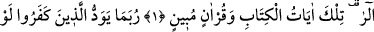
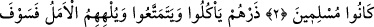
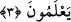

YAKINDA BİLECEKLER…
Rahman ve Rahîm olan Allah’ın adıyla.
1. Elif. Lâm. Râ. Bunlar Kitab’ın ve apaçık bir Kur’an’ın âyetleridir.
2. İnkâr edenler zaman zaman, keşke biz de müslüman olsaydık, diye arzu
ederler.
3. Onları bırak; yesinler, eğlensinler ve boş ümit onları oyalaya dursun. (Kötü
sonucu) yakında bilecekler!
“Elif. Lâm. Râ.” Bu harfler, bu sûrenin adıdır. Ulemânın cumhûru bu görüştedir. Yâni;
‘Bu sûrenin adı Elif Lâm Râ diye adlandırılmıştır’ demektir.
Kâşifî der ki: “Hurûf-i mukattaa hakkında âlimlerin görüşleri çoktur. Hepsi şunda
ittifak ettiler ki bu hurûf-i mukattaa hakkında mutlak olarak söz söylemek, cür’et yolunu
tutmaktır, yoksa işin aslını ve hakîkatini kimse bilmez.
Yenâbi’de belirtildiğine göre Hz. Ömer Fâruk (r.a.)’a bu harflerin mânâsını sordular.
O şöyle cevap verdi: “Eğer bu harfler hakkında söz söylersem zorlamada bulunmuş
olurum. Hak Teâlâ kendi peygamberine şöyle buyurmuştur: “De ki: …Ben olduğundan
başka türlü görünenlerden de değilim.” (Sâd, 38/86)
Fakir (Bursevî) der ki: Hz. Ömer’ül-Fâruk (r.a.) bu harfler hakkında konuşmayı,
tekellüf/zorlama kabilinden saymış, sahih bir zevk ve sağlam bir meşreble bilinebilecek
şeylerden olmadığını söylemiştir. Lisan, bu tip şeylerin gerçek mânâsını ifâde etmekten
âcizdir. Çünkü lisan mânâ ve hakîkatlerin değil, harf ve lâfızların kalıbıdır. Oysa
sınırsız sayıdaki mânâ ve hakîkatin böyle sınırlı olan kalıplarla ifâde edilmesine imkân
yoktur.
Burada genel olarak hurûf-i mukattaa hakkında konuşulabileceği ihsâs ediliyor. ‘Bu
harfler, Allah Teâlâ’nın ilmini kendisine has kıldığı sırlardandır.” diyen kimsenin sözü
ise Kur’an’ın hakîkatlerini kavramaktan âciz, bu konuyu zevk ile/tadarak bilmekten,
müşâhede ve ıyân âleminin ilminden uzak kimselerle alâkalıdır. Yoksa Allah’ın, ilmini
kendine has kıldığı şeyler, ancak mümteni/imkân dışı varlıklardır. Onlar ise varlığın
kokusunu bile almamış, bilakis gizli ilmin gaybında kalmış bulunan muhal şeylerdir. Bu